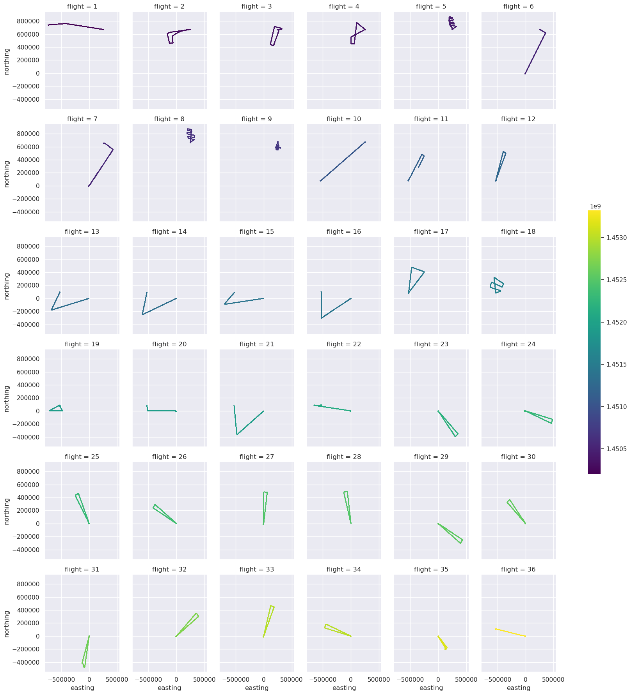
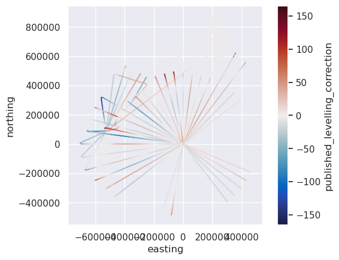
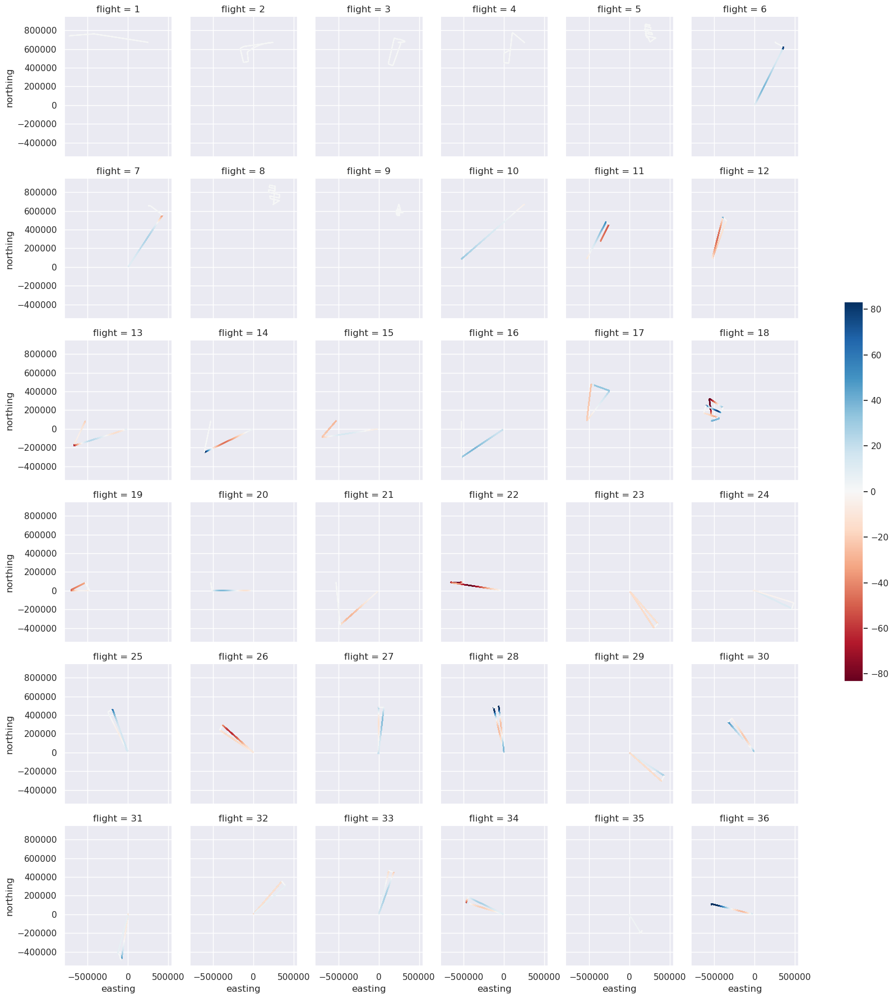
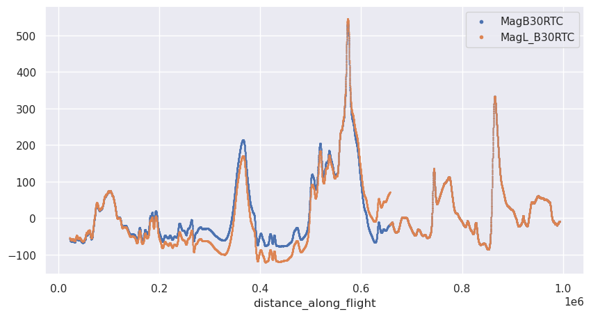
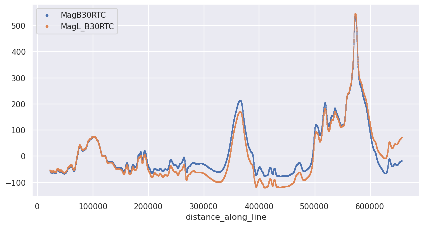
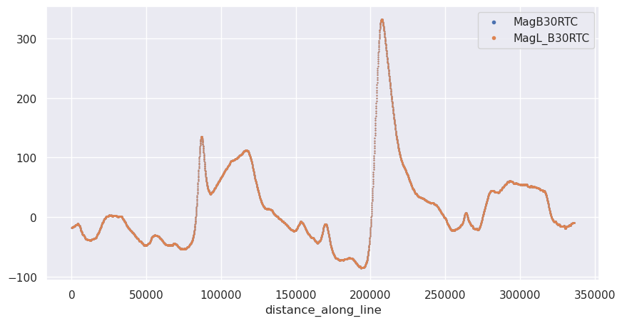

Downloading the PolarGAP airborne magnetic survey to use in the notebooks#
Accessed from: https://ramadda.data.bas.ac.uk/repository/entry/show?entryid=4a6096e7-6350-416d-a2a1-6a24adaaf929 Survey can be viewed here: https://bas.maps.arcgis.com/apps/instant/media/index.html?appid=c1a658ec78d54be18da570e955c278ca# Some more info here: https://antarctica.github.io/PDC_GeophysicsBook/data-portal/data_available.html#polargap-2015-16 Metadata here: https://data.bas.ac.uk/full-record.php?id=GB/NERC/BAS/PDC/01584
Survey notes:
Used two remote field sites (FD83, Thiel Mountains), and US South Pole Station.
38 survey flights, P1-P38
145 hrs and 26000 km survey lines
No compensation flight, so low-pass filtered the 10Hz data to 150 samples (~900m)
magnetic heading corrections not been applied
Processing notes: Data resolution: The radial design of the survey makes defining a specific resolution problematic. Line spacing at the survey edges was 90 km, reducing towards South Pole. The provided data is sampled at 1Hz, along track which equates to a ~60m along track sample spacing. The true usable resolution of this dataset is proportional to the depth to source, which averages to 2900 m across the survey.
Lineage/Methodology: The raw aeromagnetic data was initially corrected for DC offsets due to aircraft procedures, such as pumping fuel from so called ‘tip tanks’. Most of these corrections were in turns, but logistical considerations meant such corrections on lines were unavoidable. Due to the unusual radial survey design normal compensation for aircraft dynamics was not possible. However, visual comparison between recorded fluxgate and total field data on the aircraft suggested most dynamic noise had a frequency of <15 seconds (~900m). The tip corrected data was therefore filtered with a 15 second low pass filter to remove dynamic noise prior to decimation from 10Hz to 1Hz to enhance the efficiency of data processing. The total field magnetic data was corrected for the core field using the 2015 IGRF, implemented in the Geosoft software package.
The base-station correction for diurnal variations was derived from multiple base-station observations. Base station data at the PolarGAP field camps (Thiel Mountains and FD83) was collected using total-field sensors, with additional fluxgate magnetometer data from the Polar Experiment Network for Geospace Upper atmosphere Investigations (PENGUIn) at South Pole and other remote field sites. All base station data was converted into total field values, and each station corrected to have a zero mean across the survey period. The theoretical base station value at the aircraft was calculated using an inverse distance weighting scheme to merge base station observations (Shenwary et al 2011). This incorporates the base station corrections from all available base stations weighted by their distance to the survey aircraft. This technique provided a smooth transition between different base stations, and ensures the most ‘local’ base station dominates the correction. As short wavelength diurnal variations observed at a base station are often not fully representative of those occurring at large distances from the base station, the base station corrections were filtered with either a 60 or 30 minute low-pass filter. The base station data is also provided for reference.
After base station correction preliminary levelling of the 30 minute base station corrected magnetic data was carried out. This included minimising internal crossovers and discrepancies with other surveys in the region. In general the preferred levelling method removed a 0, or 1st order trend revealed by errors at a number of intersections. Where residual line to line discrepancies remained, more complex spline levelling was applied. Further improvement of the dataset by more detailed levelling may be possible.
The aeromagnetic data set includes the following channels:
Line: Sequential survey flight number from P03 to P39: decimals denote line breaks.
Lon: Longitude DDD.DDDDDDDD
Lat: Latitude DD.DDDDDDDD
Elev: Elevation on the WGS1984 ellipsoid
Date: Date YYYY/MM/DD
Time: Time (UTC) HH:MM:SS.SS
MagR: Raw total field magnetic data (nT)
MagC: Pseudo-compensated total field magnetic data (nT)
TCorr: Tip correction (nT)
RefField: IGRF correction (nT)
MagRTC: Mag after IGRF: compensation and tip correction (nT)
Bcorr_60min: IDW base station correction with 60 minute mean filter (nT)
Bcorr_30min: IDW base station correction with 30 minute mean filter (nT)
MagB60RTC: Final mag after 60 min base station correction (nT)
MagB30RTC: Final mag after 30 min base station correction (nT)
MagL_B30RTC: Magnetic anomaly after preliminary levelling (nT)
The magnetic base station data set includes the following channels:
Line: PolarGAP flight number
TimeUTC: Time UTC (HH:MM:SS.SS)
UTCDate: Date (YYYY/MM/DD)
Longitude_decimal_degrees: Survey aircraft longitude (DDD.DDDDDDDDD)
Latitude_decimal_degrees: Survey aircraft Latitude (DD.DDDDDDDDD)
x: Polar stereographic projected aircraft x position (true scale -71) (m)
y: Polar stereographic projected aircraft y position (true scale -71) (m)
power: Exponential power used in inverse distance weighting.
r_TH: Range to Thiel Mountains base station (coordinates -527308.92: 85658.68)
r_FD: Range to FD83 base station (coordinates 251981.30: 672276.42)
r_PG3: Range to PENGUIn 3 magnetometer (coordinates 344511.27: 446882.90)
r_PG4: Range to PENGUIn 4 magnetometer (coordinates 153738.09: 707916.92)
r_SP: Range to South Pole
Mag_base_Thiels_nT: Thiel Mountains base station: corrected to zero mean (nT). *=no obs
Mag_TH_fill_30_nT: Thiel Mountains base station with 30 min filter.
Mag_TH_fill_60:_nT Thiel Mountains base station with 60 min filter.
Mag_base_FD83_nT: FD83 base station: corrected to zero mean (nT). *=no obs
Mag_FD_fill_30_nT: FD83 base station with 30 min filter.
Mag_FD_fill_60_nT: FD83 base station with 60 min filter.
Mag_base_PG3_nT: Calculated total magnetic field for PENGUIn 3 magnetometer (nT)
Mag_PG3_30min_nT: Total magnetic field for PENGUIn 3 magnetometer with 30 min filter.
Mag_PG3_60min_nT: Total magnetic field for PENGUIn 3 magnetometer with 60 min filter.
Mag_base_PG4_nT: Calculated total magnetic field for PENGUIn 4 magnetometer (nT)
Mag_PG4_30min_nT: Total magnetic field for PENGUIn 4 magnetometer with 30 min filter.
Mag_PG4_60min_nT: Total magnetic field for PENGUIn 4 magnetometer with 60 min filter.
Mag_base_SP_nT: Calculated total magnetic field for South Pole Fluxgate magnetometer (nT)
Mag_SP_30min_nT: Total magnetic field for South Pole magnetometer with 30 min filter.
Mag_SP_60min_nT: Total magnetic field for South Pole magnetometer with 60 min filter.
Mag_base_IDW_30min_nT: 30 min filtered IDW base station correction applied at aircraft (nT)
Mag_base_IDW_60min_nT: 60 min filtered IDW base station correction applied at aircraft (nT)
[23]:
%load_ext autoreload
%autoreload 2
import cmocean
import harmonica as hm
import matplotlib.pyplot as plt
import numpy as np
import pandas as pd
import plotly.io as pio
import pooch
import seaborn as sns
import verde as vd
import airbornegeo
pio.renderers.default = "notebook"
The autoreload extension is already loaded. To reload it, use:
%reload_ext autoreload
Load data#
[2]:
path = pooch.retrieve(
url="https://ramadda.data.bas.ac.uk/repository/entry/get/PolarGAP_mag_ADMAP_ASCII_V2.csv?entryid=synth:4a6096e7-6350-416d-a2a1-6a24adaaf929:L1BvbGFyR0FQX21hZ19BRE1BUF9BU0NJSV9WMi5jc3Y=",
fname="PolarGAP_mag_ADMAP_ASCII_V2.csv",
path=f"{pooch.os_cache('airbornegeo')}",
known_hash="ffcc1db1e924ca23cb65d5e24b8d2d469c3e86949872f34488b9fb10b6aed8bb",
progressbar=True,
)
[3]:
data_df = pd.read_csv(path, na_values=["*"])
# drop rows with nans in Lat / Lon / MagR
data_df = data_df.dropna(subset=["Lon", "Lat", "MagR"], how="any")
data_df
[3]:
| Line | Lon | Lat | Elev | date | Time_UTC | MagR | MagC | Tcorr | RefField | MagRTC | Bcorr_60min | Bcorr_30min | MagB60RTC | MagB30RTC | MagL_B30RTC | |
|---|---|---|---|---|---|---|---|---|---|---|---|---|---|---|---|---|
| 776 | P03.1 | -44.480694 | -80.441398 | 131.48 | 2015/12/15 | 17:48:04.00 | 47687.3792 | 47688.29 | 0.0 | 47798.3 | -110.04 | -1.33 | NaN | -108.71 | NaN | NaN |
| 777 | P03.1 | -44.482024 | -80.441687 | 132.03 | 2015/12/15 | 17:48:05.00 | 47689.7448 | 47688.64 | 0.0 | 47798.6 | -109.99 | -1.34 | NaN | -108.65 | NaN | NaN |
| 778 | P03.1 | -44.483376 | -80.441986 | 132.76 | 2015/12/15 | 17:48:06.00 | 47689.7208 | 47688.92 | 0.0 | 47798.9 | -110.01 | -1.35 | NaN | -108.66 | NaN | NaN |
| 779 | P03.1 | -44.484744 | -80.442292 | 133.96 | 2015/12/15 | 17:48:07.00 | 47690.7116 | 47689.12 | 0.0 | 47799.2 | -110.11 | -1.36 | NaN | -108.75 | NaN | NaN |
| 780 | P03.1 | -44.486123 | -80.442606 | 135.51 | 2015/12/15 | 17:48:08.00 | 47689.7556 | 47689.25 | 0.0 | 47799.5 | -110.27 | -1.37 | NaN | -108.90 | NaN | NaN |
| ... | ... | ... | ... | ... | ... | ... | ... | ... | ... | ... | ... | ... | ... | ... | ... | ... |
| 640411 | P39 | -79.011108 | -84.990586 | 1593.23 | 2016/01/20 | 21:47:24.00 | 52678.9898 | 52679.05 | 0.0 | 52845.8 | -166.76 | -126.03 | -126.03 | -40.73 | -40.73 | 80.95 |
| 640412 | P39 | -79.016923 | -84.990828 | 1591.87 | 2016/01/20 | 21:47:25.00 | 52679.4624 | 52679.57 | 0.0 | 52846.3 | -166.71 | -125.93 | -125.93 | -40.78 | -40.78 | 80.93 |
| 640413 | P39 | -79.022752 | -84.991071 | 1590.41 | 2016/01/20 | 21:47:26.00 | 52680.1722 | 52680.08 | 0.0 | 52846.8 | -166.68 | -125.86 | -125.86 | -40.82 | -40.82 | 80.92 |
| 640414 | P39 | -79.028594 | -84.991315 | 1588.76 | 2016/01/20 | 21:47:27.00 | 52680.6980 | 52680.59 | 0.0 | 52847.2 | -166.66 | -125.81 | -125.81 | -40.85 | -40.85 | 80.92 |
| 640415 | P39 | -79.034452 | -84.991560 | 1586.98 | 2016/01/20 | 21:47:28.00 | 52680.9108 | 52681.09 | 0.0 | 52847.7 | -166.65 | -125.77 | NaN | -40.88 | NaN | NaN |
560167 rows × 16 columns
[4]:
data_df.describe()
[4]:
| Lon | Lat | Elev | MagR | MagC | Tcorr | RefField | MagRTC | Bcorr_60min | Bcorr_30min | MagB60RTC | MagB30RTC | MagL_B30RTC | |
|---|---|---|---|---|---|---|---|---|---|---|---|---|---|
| count | 560167.000000 | 560167.000000 | 560167.000000 | 560167.000000 | 542803.000000 | 545338.000000 | 560167.000000 | 542803.000000 | 560166.000000 | 521655.000000 | 542802.000000 | 522265.000000 | 522263.000000 |
| mean | -22.666029 | -86.147723 | 2916.017281 | 53021.696145 | 53016.835123 | -18.675374 | 53044.626554 | -41.528796 | -33.841691 | -33.581347 | -8.343020 | -6.728692 | -7.477536 |
| std | 75.189642 | 2.152358 | 457.949070 | 2120.134321 | 2123.642185 | 48.027996 | 2135.054349 | 106.356901 | 74.001941 | 75.415269 | 80.130212 | 80.304888 | 78.016381 |
| min | -179.737553 | -89.999904 | 131.480000 | 47687.379200 | 47688.290000 | -187.000000 | 47798.300000 | -497.980000 | -316.420000 | -347.920000 | -344.880000 | -358.840000 | -358.840000 |
| 25% | -80.844587 | -87.919588 | 2804.540000 | 51409.472000 | 51421.345000 | 0.000000 | 51430.450000 | -98.440000 | -62.840000 | -62.480000 | -61.650000 | -60.180000 | -59.230000 |
| 50% | -30.000391 | -85.821818 | 2925.860000 | 53150.234200 | 53125.850000 | 0.000000 | 53159.000000 | -40.600000 | -9.600000 | -9.720000 | -23.220000 | -21.590000 | -22.400000 |
| 75% | 20.482409 | -84.601775 | 3210.600000 | 54625.244700 | 54618.950000 | 0.000000 | 54677.900000 | 22.050000 | 7.320000 | 7.600000 | 32.447500 | 33.820000 | 29.000000 |
| max | 179.862364 | -80.441398 | 4326.720000 | 58030.806400 | 58030.540000 | 0.000000 | 58037.100000 | 546.870000 | 241.190000 | 255.400000 | 538.020000 | 535.700000 | 545.790000 |
Reproject#
[5]:
# reproject to EPSG:3031 Polar Stereographic
data_df["easting"], data_df["northing"] = airbornegeo.reproject(
data_df.Lon,
data_df.Lat,
input_crs="EPSG:4326",
output_crs="EPSG:3031",
)
data_df.head()
[5]:
| Line | Lon | Lat | Elev | date | Time_UTC | MagR | MagC | Tcorr | RefField | MagRTC | Bcorr_60min | Bcorr_30min | MagB60RTC | MagB30RTC | MagL_B30RTC | easting | northing | |
|---|---|---|---|---|---|---|---|---|---|---|---|---|---|---|---|---|---|---|
| 776 | P03.1 | -44.480694 | -80.441398 | 131.48 | 2015/12/15 | 17:48:04.00 | 47687.3792 | 47688.29 | 0.0 | 47798.3 | -110.04 | -1.33 | NaN | -108.71 | NaN | NaN | -729314.730339 | 742656.452995 |
| 777 | P03.1 | -44.482024 | -80.441687 | 132.03 | 2015/12/15 | 17:48:05.00 | 47689.7448 | 47688.64 | 0.0 | 47798.6 | -109.99 | -1.34 | NaN | -108.65 | NaN | NaN | -729309.819815 | 742616.969634 |
| 778 | P03.1 | -44.483376 | -80.441986 | 132.76 | 2015/12/15 | 17:48:06.00 | 47689.7208 | 47688.92 | 0.0 | 47798.9 | -110.01 | -1.35 | NaN | -108.66 | NaN | NaN | -729304.426553 | 742576.426492 |
| 779 | P03.1 | -44.484744 | -80.442292 | 133.96 | 2015/12/15 | 17:48:07.00 | 47690.7116 | 47689.12 | 0.0 | 47799.2 | -110.11 | -1.36 | NaN | -108.75 | NaN | NaN | -729298.702629 | 742535.134113 |
| 780 | P03.1 | -44.486123 | -80.442606 | 135.51 | 2015/12/15 | 17:48:08.00 | 47689.7556 | 47689.25 | 0.0 | 47799.5 | -110.27 | -1.37 | NaN | -108.90 | NaN | NaN | -729292.506529 | 742493.078148 |
Calculate unixtime#
[6]:
# calculate the unixtime from the date and time columns
data_df["date"] = pd.to_datetime(data_df["date"])
data_df["Time_UTC"] = pd.to_timedelta(data_df["Time_UTC"])
data_df["unixtime"] = data_df["date"] + data_df["Time_UTC"]
data_df = data_df.dropna(subset=["unixtime"])
data_df["unixtime"] = data_df["unixtime"].apply(lambda x: x.timestamp())
data_df = data_df.sort_values(["unixtime"]).reset_index(drop=True)
data_df.head()
[6]:
| Line | Lon | Lat | Elev | date | Time_UTC | MagR | MagC | Tcorr | RefField | MagRTC | Bcorr_60min | Bcorr_30min | MagB60RTC | MagB30RTC | MagL_B30RTC | easting | northing | unixtime | |
|---|---|---|---|---|---|---|---|---|---|---|---|---|---|---|---|---|---|---|---|
| 0 | P03.1 | -44.480694 | -80.441398 | 131.48 | 2015-12-15 | 0 days 17:48:04 | 47687.3792 | 47688.29 | 0.0 | 47798.3 | -110.04 | -1.33 | NaN | -108.71 | NaN | NaN | -729314.730339 | 742656.452995 | 1.450202e+09 |
| 1 | P03.1 | -44.482024 | -80.441687 | 132.03 | 2015-12-15 | 0 days 17:48:05 | 47689.7448 | 47688.64 | 0.0 | 47798.6 | -109.99 | -1.34 | NaN | -108.65 | NaN | NaN | -729309.819815 | 742616.969634 | 1.450202e+09 |
| 2 | P03.1 | -44.483376 | -80.441986 | 132.76 | 2015-12-15 | 0 days 17:48:06 | 47689.7208 | 47688.92 | 0.0 | 47798.9 | -110.01 | -1.35 | NaN | -108.66 | NaN | NaN | -729304.426553 | 742576.426492 | 1.450202e+09 |
| 3 | P03.1 | -44.484744 | -80.442292 | 133.96 | 2015-12-15 | 0 days 17:48:07 | 47690.7116 | 47689.12 | 0.0 | 47799.2 | -110.11 | -1.36 | NaN | -108.75 | NaN | NaN | -729298.702629 | 742535.134113 | 1.450202e+09 |
| 4 | P03.1 | -44.486123 | -80.442606 | 135.51 | 2015-12-15 | 0 days 17:48:08 | 47689.7556 | 47689.25 | 0.0 | 47799.5 | -110.27 | -1.37 | NaN | -108.90 | NaN | NaN | -729292.506529 | 742493.078148 | 1.450202e+09 |
[7]:
data_df.date.unique()
[7]:
<DatetimeArray>
['2015-12-15 00:00:00', '2015-12-16 00:00:00', '2015-12-17 00:00:00',
'2015-12-18 00:00:00', '2015-12-19 00:00:00', '2015-12-20 00:00:00',
'2015-12-21 00:00:00', '2015-12-25 00:00:00', '2015-12-26 00:00:00',
'2015-12-27 00:00:00', '2015-12-28 00:00:00', '2015-12-29 00:00:00',
'2015-12-30 00:00:00', '2015-12-31 00:00:00', '2016-01-04 00:00:00',
'2016-01-05 00:00:00', '2016-01-06 00:00:00', '2016-01-07 00:00:00',
'2016-01-08 00:00:00', '2016-01-09 00:00:00', '2016-01-10 00:00:00',
'2016-01-11 00:00:00', '2016-01-12 00:00:00', '2016-01-13 00:00:00',
'2016-01-14 00:00:00', '2016-01-16 00:00:00', '2016-01-17 00:00:00',
'2016-01-18 00:00:00', '2016-01-20 00:00:00']
Length: 29, dtype: datetime64[us]
Set line and flight ID’s#
[8]:
np.array(data_df.Line.unique())
[8]:
array(['P03.1', 'P04.1', 'P04.2', 'P04.3', 'P04.4', 'P04.5', 'P05.1',
'P05.2', 'P05.3', 'P05.4', 'P05.5', 'P06.1', 'P06.2', 'P06.3',
'P06.4', 'P06.5', 'P07.1', 'P07.2', 'P07.3', 'P07.4', 'P07.5',
'P07.6', 'P07.7', 'P07.8', 'P07.9', 'P07.10', 'P07.11', 'P07.12',
'P07.13', 'P07.14', 'P07.15', 'P07.16', 'P07.17', 'P08.1', 'P08.2',
'P09.1', 'P09.2', 'P10.1', 'P10.2', 'P10.3', 'P10.4', 'P10.5',
'P10.6', 'P10.7', 'P10.8', 'P10.9', 'P10.10', 'P10.11', 'P10.12',
'P10.13', 'P11.1', 'P11.2', 'P11.3', 'P11.4', 'P11.5', 'P11.6',
'P11.7', 'P11.8', 'P11.9', 'P11.10', 'P11.11', 'P11.12', 'P11.13',
'P11.14', 'P12.1', 'P13.1', 'P13.2', 'P13.3', 'P14.1', 'P14.2',
'P14.3', 'P15.1', 'P15.2', 'P16.1', 'P16.2', 'P17.1', 'P17.2',
'P18.1', 'P18.2', 'P19.1', 'P19.2', 'P19.3', 'P20.1', 'P20.2',
'P20.3', 'P20.4', 'P20.5', 'P20.6', 'P20.7', 'P21.1', 'P21.2',
'P21.3', 'P22.1', 'P22.2', 'P23.1', 'P23.2', 'P24.1', 'P24.2',
'P25.1', 'P25.2', 'P25.3', 'P26.1', 'P26.2', 'P26.3', 'P27.1',
'P27.2', 'P27.3', 'P28.1', 'P28.2', 'P28.3', 'P29.1', 'P29.2',
'P29.3', 'P30.1', 'P30.2', 'P30.3', 'P31.1', 'P31.2', 'P31.3',
'P32.1', 'P32.2', 'P32.3', 'P32.4', 'P32.5', 'P32.6', 'P33.1',
'P33.2', 'P33.3', 'P34.1', 'P34.2', 'P34.3', 'P35.1', 'P35.2',
'P35.3', 'P36.1', 'P36.2', 'P36.3', 'P37.1', 'P37.2', 'P37.3',
'P39'], dtype=object)
[9]:
# first integer of 'Line' is the flight number
data_df["line"] = data_df.Line.str[1:]
data_df["flight"] = data_df.line.astype(str).str.split(".").str[0].astype(float)
data_df[["Line", "line", "flight"]]
[9]:
| Line | line | flight | |
|---|---|---|---|
| 0 | P03.1 | 03.1 | 3.0 |
| 1 | P03.1 | 03.1 | 3.0 |
| 2 | P03.1 | 03.1 | 3.0 |
| 3 | P03.1 | 03.1 | 3.0 |
| 4 | P03.1 | 03.1 | 3.0 |
| ... | ... | ... | ... |
| 560162 | P39 | 39 | 39.0 |
| 560163 | P39 | 39 | 39.0 |
| 560164 | P39 | 39 | 39.0 |
| 560165 | P39 | 39 | 39.0 |
| 560166 | P39 | 39 | 39.0 |
560167 rows × 3 columns
Analyze flights#
[ ]:
# convert flight labels to integers starting from 0
survey = airbornegeo.Survey(data_df, line_column="flight")
survey.unique_line_id()
data_df = survey.data
data_df.flight.unique()
[ ]:
survey.plot(color_by="flight", cmap="rainbow", s=0.02, coarsen=20)
[12]:
rows = []
data_df = data_df.sort_values(["flight", "unixtime"])
for name, df in data_df.groupby("flight"):
duration = df.unixtime.max() - df.unixtime.min()
df["time_dif"] = df.unixtime.diff()
max_jump = df.time_dif.max()
# if max_jump>10:
# print(df.sort_values(['time_dif']))
rows.append({"flight": name, "duration": duration, "max_jump": max_jump})
flight_time_stats = pd.DataFrame(rows)
[13]:
flight_time_stats.sort_values("duration", ascending=False)
[13]:
| flight | duration | max_jump | |
|---|---|---|---|
| 26 | 27 | 18378.0 | 1.08 |
| 17 | 18 | 18245.0 | 1.08 |
| 32 | 33 | 18195.0 | 1.08 |
| 31 | 32 | 18177.0 | 1.08 |
| 1 | 2 | 18150.0 | 1.08 |
| 23 | 24 | 17863.0 | 1.08 |
| 16 | 17 | 17677.0 | 1.08 |
| 25 | 26 | 17533.0 | 1.08 |
| 7 | 8 | 17325.0 | 1.08 |
| 11 | 12 | 17208.0 | 1.08 |
| 28 | 29 | 17185.0 | 1.08 |
| 24 | 25 | 17056.0 | 1.10 |
| 22 | 23 | 16996.0 | 1.08 |
| 0 | 1 | 16692.0 | 1.08 |
| 27 | 28 | 16581.0 | 1.08 |
| 15 | 16 | 16350.0 | 1.08 |
| 30 | 31 | 16256.0 | 1.08 |
| 29 | 30 | 16225.0 | 19.76 |
| 33 | 34 | 16153.0 | 1.09 |
| 9 | 10 | 16031.0 | 1.08 |
| 6 | 7 | 15794.0 | 1.08 |
| 3 | 4 | 15731.0 | 31.98 |
| 12 | 13 | 15705.0 | 1.08 |
| 14 | 15 | 15651.0 | 1.08 |
| 20 | 21 | 15567.0 | 1.08 |
| 13 | 14 | 15037.0 | 1.08 |
| 4 | 5 | 14869.0 | 1.08 |
| 21 | 22 | 13868.0 | 1.08 |
| 2 | 3 | 13434.0 | 1.08 |
| 8 | 9 | 12893.0 | 375.69 |
| 34 | 35 | 12724.0 | 3.00 |
| 5 | 6 | 12623.0 | 1.08 |
| 10 | 11 | 12259.0 | 1.08 |
| 19 | 20 | 11066.0 | 1.08 |
| 35 | 36 | 10223.0 | 1.00 |
| 18 | 19 | 9276.0 | 1.08 |
[14]:
flight_time_stats.sort_values("max_jump", ascending=False).head(10)
[14]:
| flight | duration | max_jump | |
|---|---|---|---|
| 8 | 9 | 12893.0 | 375.69 |
| 3 | 4 | 15731.0 | 31.98 |
| 29 | 30 | 16225.0 | 19.76 |
| 34 | 35 | 12724.0 | 3.00 |
| 24 | 25 | 17056.0 | 1.10 |
| 33 | 34 | 16153.0 | 1.09 |
| 0 | 1 | 16692.0 | 1.08 |
| 1 | 2 | 18150.0 | 1.08 |
| 2 | 3 | 13434.0 | 1.08 |
| 4 | 5 | 14869.0 | 1.08 |
[15]:
# plot each flight
df = data_df
grid = sns.FacetGrid(
df,
col="flight",
col_wrap=int(len(df.flight.unique()) ** 0.5),
)
norm = plt.Normalize(vmin=df.unixtime.min(), vmax=df.unixtime.max())
grid.map_dataframe(
sns.scatterplot,
"easting",
"northing",
"unixtime",
palette="viridis",
hue_norm=norm,
edgecolor="none",
s=2,
)
sm = plt.cm.ScalarMappable(cmap="viridis", norm=norm)
sm.set_array([])
cbar = grid.figure.colorbar(sm, ax=grid.axes.ravel().tolist(), shrink=0.4)

Analyze lines#
[ ]:
# convert line labels to integers starting from 0
survey = airbornegeo.Survey(data_df, line_column="line")
survey.unique_line_id()
data_df = survey.data
data_df.line.unique()
[ ]:
survey.plot(color_by="line", cmap="rainbow", s=0.02, coarsen=20)
[18]:
rows = []
data_df = data_df.sort_values(["line", "unixtime"])
for name, df in data_df.groupby("line"):
duration = df.unixtime.max() - df.unixtime.min()
df["time_dif"] = df.unixtime.diff()
max_jump = df.time_dif.max()
# if max_jump>10:
# print(df.sort_values(['time_dif']))
rows.append({"line": name, "duration": duration, "max_jump": max_jump})
line_time_stats = pd.DataFrame(rows)
[19]:
line_time_stats.sort_values("duration", ascending=False)
[19]:
| line | duration | max_jump | |
|---|---|---|---|
| 0 | 1 | 16692.0 | 1.08 |
| 64 | 65 | 16031.0 | 1.08 |
| 35 | 36 | 12541.0 | 1.08 |
| 97 | 98 | 11702.0 | 1.08 |
| 76 | 77 | 11159.0 | 1.08 |
| ... | ... | ... | ... |
| 120 | 121 | 312.0 | 1.00 |
| 53 | 54 | 283.0 | 1.00 |
| 28 | 29 | 275.0 | 1.00 |
| 17 | 18 | 273.0 | 1.00 |
| 22 | 23 | 245.0 | 1.00 |
141 rows × 3 columns
[20]:
line_time_stats.sort_values("max_jump", ascending=False)
[20]:
| line | duration | max_jump | |
|---|---|---|---|
| 52 | 53 | 1117.31 | 80.35 |
| 11 | 12 | 4375.00 | 31.98 |
| 122 | 123 | 5428.00 | 19.76 |
| 137 | 138 | 6148.00 | 3.00 |
| 106 | 107 | 7300.00 | 1.10 |
| ... | ... | ... | ... |
| 127 | 128 | 6203.00 | 1.00 |
| 135 | 136 | 1034.00 | 1.00 |
| 134 | 135 | 6998.00 | 1.00 |
| 139 | 140 | 3988.00 | 1.00 |
| 140 | 141 | 10223.00 | 1.00 |
141 rows × 3 columns
Distance along flight#
[ ]:
survey = airbornegeo.Survey(
data_df,
line_column="flight",
distance_column="distance_along_flight",
)
survey.along_track_distance()
data_df = survey.data
data_df.head()
[ ]:
survey.plot(color_by="distance_along_flight", s=0.02, coarsen=20)
Distance along line#
[ ]:
survey = airbornegeo.Survey(
data_df,
line_column="line",
distance_column="distance_along_line",
)
survey.along_track_distance()
data_df = survey.data
data_df.head()
[ ]:
survey.plot(color_by="distance_along_line", s=0.02, coarsen=20)
Examine magnetic data#
[30]:
data_df.columns
[30]:
Index(['Line', 'Lon', 'Lat', 'Elev', 'date', 'Time_UTC', 'MagR', 'MagC',
'Tcorr', 'RefField', 'MagRTC', 'Bcorr_60min', 'Bcorr_30min',
'MagB60RTC', 'MagB30RTC', 'MagL_B30RTC', 'easting', 'northing',
'unixtime', 'line', 'flight', 'geometry', 'distance_along_flight',
'distance_along_line'],
dtype='str')
[31]:
data_df[
[
"MagR", # Raw total field magnetic data (nT)
"MagC", # Pseudo-compensated total field magnetic data (nT)
"Tcorr", # Tip correction (nT)
"RefField", # IGRF correction (nT)
"MagRTC", # Mag after IGRF: compensation and tip correction (nT)
"Bcorr_60min", # IDW base station correction with 60 minute mean filter (nT)
"Bcorr_30min", # IDW base station correction with 30 minute mean filter (nT)
"MagB60RTC", # Final mag after 60 min base station correction (nT)
"MagB30RTC", # Final mag after 30 min base station correction (nT)
"MagL_B30RTC", # Magnetic anomaly after preliminary levelling (nT)
]
].head()
[31]:
| MagR | MagC | Tcorr | RefField | MagRTC | Bcorr_60min | Bcorr_30min | MagB60RTC | MagB30RTC | MagL_B30RTC | |
|---|---|---|---|---|---|---|---|---|---|---|
| 0 | 47687.3792 | 47688.29 | 0.0 | 47798.3 | -110.04 | -1.33 | NaN | -108.71 | NaN | NaN |
| 1 | 47689.7448 | 47688.64 | 0.0 | 47798.6 | -109.99 | -1.34 | NaN | -108.65 | NaN | NaN |
| 2 | 47689.7208 | 47688.92 | 0.0 | 47798.9 | -110.01 | -1.35 | NaN | -108.66 | NaN | NaN |
| 3 | 47690.7116 | 47689.12 | 0.0 | 47799.2 | -110.11 | -1.36 | NaN | -108.75 | NaN | NaN |
| 4 | 47689.7556 | 47689.25 | 0.0 | 47799.5 | -110.27 | -1.37 | NaN | -108.90 | NaN | NaN |
[32]:
data_df[
[
"MagR", # Raw total field magnetic data (nT)
"MagC", # Pseudo-compensated total field magnetic data (nT)
"Tcorr", # Tip correction (nT)
"RefField", # IGRF correction (nT)
"MagRTC", # Mag after IGRF: compensation and tip correction (nT)
"Bcorr_60min", # IDW base station correction with 60 minute mean filter (nT)
"Bcorr_30min", # IDW base station correction with 30 minute mean filter (nT)
"MagB60RTC", # Final mag after 60 min base station correction (nT)
"MagB30RTC", # Final mag after 30 min base station correction (nT)
"MagL_B30RTC", # Magnetic anomaly after preliminary levelling (nT)
]
].describe()
[32]:
| MagR | MagC | Tcorr | RefField | MagRTC | Bcorr_60min | Bcorr_30min | MagB60RTC | MagB30RTC | MagL_B30RTC | |
|---|---|---|---|---|---|---|---|---|---|---|
| count | 560167.000000 | 542803.000000 | 545338.000000 | 560167.000000 | 542803.000000 | 560166.000000 | 521655.000000 | 542802.000000 | 522265.000000 | 522263.000000 |
| mean | 53021.696145 | 53016.835123 | -18.675374 | 53044.626554 | -41.528796 | -33.841691 | -33.581347 | -8.343020 | -6.728692 | -7.477536 |
| std | 2120.134321 | 2123.642185 | 48.027996 | 2135.054349 | 106.356901 | 74.001941 | 75.415269 | 80.130212 | 80.304888 | 78.016381 |
| min | 47687.379200 | 47688.290000 | -187.000000 | 47798.300000 | -497.980000 | -316.420000 | -347.920000 | -344.880000 | -358.840000 | -358.840000 |
| 25% | 51409.472000 | 51421.345000 | 0.000000 | 51430.450000 | -98.440000 | -62.840000 | -62.480000 | -61.650000 | -60.180000 | -59.230000 |
| 50% | 53150.234200 | 53125.850000 | 0.000000 | 53159.000000 | -40.600000 | -9.600000 | -9.720000 | -23.220000 | -21.590000 | -22.400000 |
| 75% | 54625.244700 | 54618.950000 | 0.000000 | 54677.900000 | 22.050000 | 7.320000 | 7.600000 | 32.447500 | 33.820000 | 29.000000 |
| max | 58030.806400 | 58030.540000 | 0.000000 | 58037.100000 | 546.870000 | 241.190000 | 255.400000 | 538.020000 | 535.700000 | 545.790000 |
[ ]:
survey.plot(color_by="MagB30RTC", s=0.02, coarsen=20)
[ ]:
survey.plot(color_by="MagL_B30RTC", s=0.02, coarsen=20)
[35]:
data_df["published_levelling_correction"] = data_df.MagL_B30RTC - data_df.MagB30RTC
maxabs = vd.maxabs(data_df.published_levelling_correction, percentile=100)
data_df[::20].plot.scatter(
"easting",
"northing",
c="published_levelling_correction",
s=0.02,
cmap=cmocean.cm.balance,
vmin=-maxabs,
vmax=maxabs,
).set_aspect("equal")

[36]:
# plot each flight
df = data_df
grid = sns.FacetGrid(
df,
col="flight",
col_wrap=int(len(df.flight.unique()) ** 0.5),
)
maxabs = vd.maxabs(df.published_levelling_correction, percentile=99)
norm = plt.Normalize(vmin=-maxabs, vmax=maxabs)
grid.map_dataframe(
sns.scatterplot,
"easting",
"northing",
"published_levelling_correction",
palette="RdBu",
hue_norm=norm,
edgecolor="none",
s=2,
)
sm = plt.cm.ScalarMappable(cmap="RdBu", norm=norm)
sm.set_array([])
cbar = grid.figure.colorbar(sm, ax=grid.axes.ravel().tolist(), shrink=0.4)

[37]:
fig = airbornegeo.plot_profiles(
data_df[data_df.flight == 14],
# y=("MagL_B30RTC", "MagB30RTC"),
y=("MagB30RTC", "MagL_B30RTC"),
x="distance_along_flight",
)

[38]:
data_df[data_df.flight == 14].line.unique()
[38]:
array([74, 75])
[39]:
fig = airbornegeo.plot_profiles(
data_df[data_df.line == 74],
y=("MagB30RTC", "MagL_B30RTC"),
x="distance_along_line",
)

[40]:
fig = airbornegeo.plot_profiles(
data_df[data_df.line == 75],
y=("MagB30RTC", "MagL_B30RTC"),
x="distance_along_line",
)

[41]:
data_df.to_csv("../data/PolarGAP_magnetic_survey.csv", index=False)
[42]:
data_df = pd.read_csv("../data/PolarGAP_magnetic_survey.csv")
data_df
[42]:
| Line | Lon | Lat | Elev | date | Time_UTC | MagR | MagC | Tcorr | RefField | ... | MagL_B30RTC | easting | northing | unixtime | line | flight | geometry | distance_along_flight | distance_along_line | published_levelling_correction | |
|---|---|---|---|---|---|---|---|---|---|---|---|---|---|---|---|---|---|---|---|---|---|
| 0 | P03.1 | -44.480694 | -80.441398 | 131.48 | 2015-12-15 | 0 days 17:48:04 | 47687.3792 | 47688.29 | 0.0 | 47798.3 | ... | NaN | -729314.730339 | 742656.452995 | 1.450202e+09 | 1 | 1 | POINT (-729314.7303385646 742656.4529948358) | 0.000000 | 0.000000 | NaN |
| 1 | P03.1 | -44.482024 | -80.441687 | 132.03 | 2015-12-15 | 0 days 17:48:05 | 47689.7448 | 47688.64 | 0.0 | 47798.6 | ... | NaN | -729309.819815 | 742616.969634 | 1.450202e+09 | 1 | 1 | POINT (-729309.8198154062 742616.9696339326) | 39.787549 | 39.787549 | NaN |
| 2 | P03.1 | -44.483376 | -80.441986 | 132.76 | 2015-12-15 | 0 days 17:48:06 | 47689.7208 | 47688.92 | 0.0 | 47798.9 | ... | NaN | -729304.426553 | 742576.426492 | 1.450202e+09 | 1 | 1 | POINT (-729304.4265530404 742576.4264921739) | 80.687837 | 80.687837 | NaN |
| 3 | P03.1 | -44.484744 | -80.442292 | 133.96 | 2015-12-15 | 0 days 17:48:07 | 47690.7116 | 47689.12 | 0.0 | 47799.2 | ... | NaN | -729298.702629 | 742535.134113 | 1.450202e+09 | 1 | 1 | POINT (-729298.7026291394 742535.1341129589) | 122.375052 | 122.375052 | NaN |
| 4 | P03.1 | -44.486123 | -80.442606 | 135.51 | 2015-12-15 | 0 days 17:48:08 | 47689.7556 | 47689.25 | 0.0 | 47799.5 | ... | NaN | -729292.506529 | 742493.078148 | 1.450202e+09 | 1 | 1 | POINT (-729292.5065285452 742493.0781482834) | 164.885002 | 164.885002 | NaN |
| ... | ... | ... | ... | ... | ... | ... | ... | ... | ... | ... | ... | ... | ... | ... | ... | ... | ... | ... | ... | ... | ... |
| 560162 | P39 | -79.011108 | -84.990586 | 1593.23 | 2016-01-20 | 0 days 21:47:24 | 52678.9898 | 52679.05 | 0.0 | 52845.8 | ... | 80.95 | -534631.996395 | 103814.370783 | 1.453326e+09 | 141 | 36 | POINT (-534631.9963949411 103814.3707829598) | 560911.994252 | 560911.994252 | 121.68 |
| 560163 | P39 | -79.016923 | -84.990828 | 1591.87 | 2016-01-20 | 0 days 21:47:25 | 52679.4624 | 52679.57 | 0.0 | 52846.3 | ... | 80.93 | -534616.670182 | 103755.091283 | 1.453326e+09 | 141 | 36 | POINT (-534616.6701818157 103755.09128288226) | 560973.222937 | 560973.222937 | 121.71 |
| 560164 | P39 | -79.022752 | -84.991071 | 1590.41 | 2016-01-20 | 0 days 21:47:26 | 52680.1722 | 52680.08 | 0.0 | 52846.8 | ... | 80.92 | -534601.255925 | 103695.664609 | 1.453326e+09 | 141 | 36 | POINT (-534601.2559252244 103695.66460877389) | 561034.616169 | 561034.616169 | 121.74 |
| 560165 | P39 | -79.028594 | -84.991315 | 1588.76 | 2016-01-20 | 0 days 21:47:27 | 52680.6980 | 52680.59 | 0.0 | 52847.2 | ... | 80.92 | -534585.751767 | 103636.100136 | 1.453326e+09 | 141 | 36 | POINT (-534585.7517672417 103636.10013555853) | 561096.165380 | 561096.165380 | 121.77 |
| 560166 | P39 | -79.034452 | -84.991560 | 1586.98 | 2016-01-20 | 0 days 21:47:28 | 52680.9108 | 52681.09 | 0.0 | 52847.7 | ... | NaN | -534570.163085 | 103576.369917 | 1.453326e+09 | 141 | 36 | POINT (-534570.1630849909 103576.36991718244) | 561157.896296 | 561157.896296 | NaN |
560167 rows × 25 columns
[ ]:
# block reduce the line data
survey = airbornegeo.Survey(
data_df,
line_column="flight",
distance_column="distance_along_flight",
)
survey = survey.block_reduce(
np.median,
spacing=500,
# reduce_by=('easting','northing'),
reduce_by="distance_along_flight",
)
data_df = survey.data
data_df
[44]:
data_df.to_csv("../data/PolarGAP_magnetic_survey_blocked.csv", index=False)
[45]:
break # noqa: F701
Cell In[45], line 1
break # noqa: F701
^
SyntaxError: 'break' outside loop
[ ]:
data_df = pd.read_csv("../data/PolarGAP_magnetic_survey_blocked.csv")
data_df
[ ]:
data_df = data_df.dropna(subset=["easting", "northing", "Elev", "MagB30RTC"])
coords = (
data_df.easting,
data_df.northing,
data_df.Elev,
)
data_df
[ ]:
eqs_kwargs = dict( # noqa: C408
damping=0.1,
depth="default",
block_size=2000,
)
# eqs_unlevelled = hm.EquivalentSourcesGB(
# window_size=600e3,
# random_state=42,
# **eqs_kwargs,
# )
eqs_unlevelled = hm.EquivalentSources(**eqs_kwargs)
# bytes = eqs_unlevelled.estimate_required_memory(coords)
# print(f"{bytes / 1e9} GB ram required")
[ ]:
eqs_unlevelled.fit(coords, data_df.MagB30RTC)
[ ]:
# Define grid coordinates
grid_coords = vd.grid_coordinates(
region=vd.pad_region(vd.get_region(coords), 10e3),
spacing=2000,
extra_coords=data_df.Elev.mean(), # upward continue
adjust="region",
)
grid_unlevelled = eqs_unlevelled.grid(grid_coords)
# grid_unlevelled = vd.distance_mask(
# (coords[0], coords[1]), maxdist=10e3, grid=grid_unlevelled
# )
grid_unlevelled = grid_unlevelled.reset_coords(names="upward").scalars
grid_unlevelled.plot(robust=True).axes.set_aspect("equal")
[ ]:
hg_unlevelled = airbornegeo.filter_grid(
grid_unlevelled, filter_type="horizontal_gradient"
)
hg_unlevelled.plot(robust=True)
[ ]: